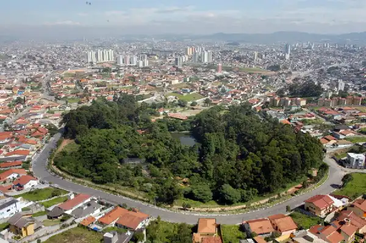
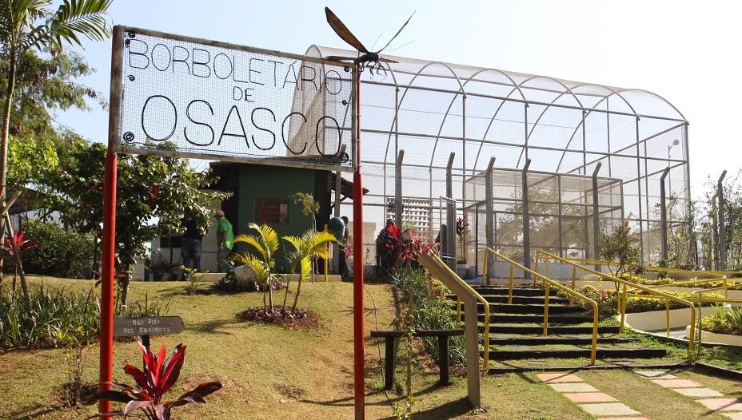
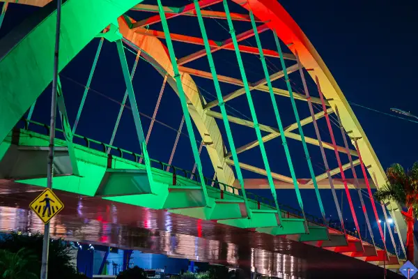
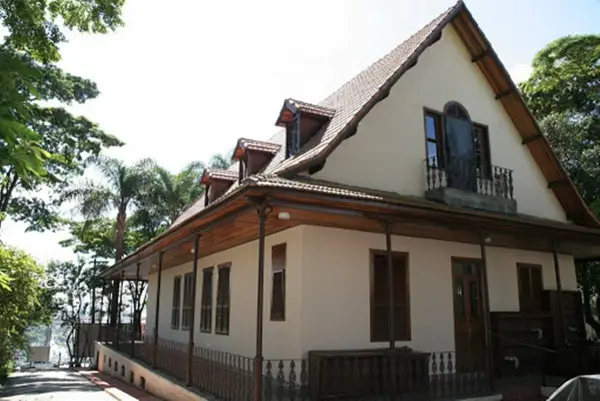

Osasco Chamber of Commerce
Home
Discover
Directory
Join
Osasco Chamber of Commerce: Discover the City
Discover. Connect. Thrive—For Businesses and Beyond.
Local Attractions

Parque Chico Mendes
Catedral de Santo Antonio

Borboletario de Osasco

Ponte Metalica

Museu Historico Bradesco
Shopping União de Osasco